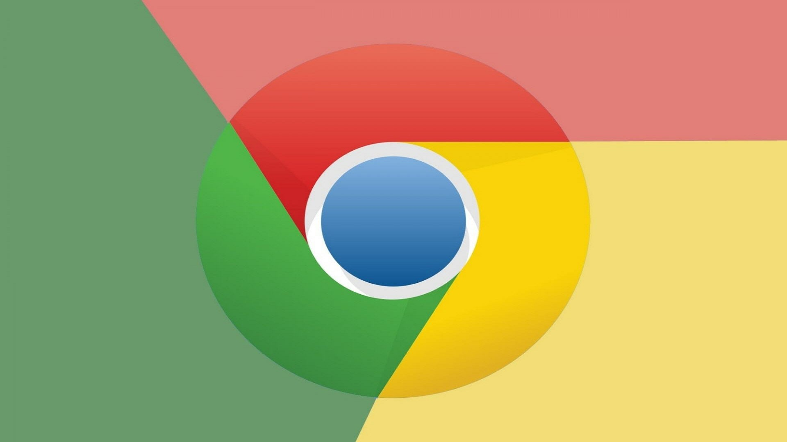

IE
Internet Explorer，是美国微软公司推出的一款网页浏览器。原称Microsoft Internet Explorer(6版本以前)和Windows Internet Explorer(7、8、9、10、11版本)，简称IE。
Internet Explorer，是美国微软公司推出的一款网页浏览器。原称Microsoft Internet Explorer(6版本以前)和Windows Internet Explorer(7、8、9、10、11版本)，简称IE。
Google Chrome，又称Google浏览器，是一个由Google（谷歌）公司开发的网页浏览器。 该浏览器是基于其他开源软件所撰写，包括WebKit，目标是提升稳定性、速度和安全性，并创造出简单且有效率的使用者界面。
Mozilla Firefox，中文名通常称为“火狐”或“火狐浏览器”，是一个开源网页浏览器， 使用Gecko引擎（非ie内核），支持多种操作系统如Windows、Mac和linux。
Safari，是苹果计算机的最新操作系统Mac OS X中的浏览器，使用了KDE的KHTML作为浏览器的运算核心。 Safari在2003年1月7日首度发行测试版，并成为Mac OS X v10.3与之后的默认浏览器，也是iPhone与IPAD和iPod touch的指定浏览器。
Opera浏览器，是一款挪威Opera Software ASA公司制作的支持多页面标签式浏览的网络浏览器。 是跨平台浏览器可以在Windows、Mac和Linux三个操作系统平台上运行。.
Internet Explorer，原称Microsoft Internet Explorer(6版本以前)和Windows Internet Explorer(7，8，9，10版本)， 简称IE，是美国微软公司推出的一款网页浏览器。它采用的排版引擎(俗称内核)为Trident。